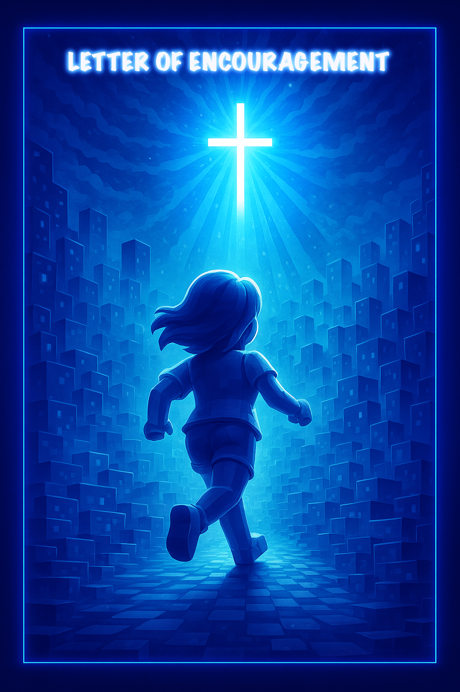
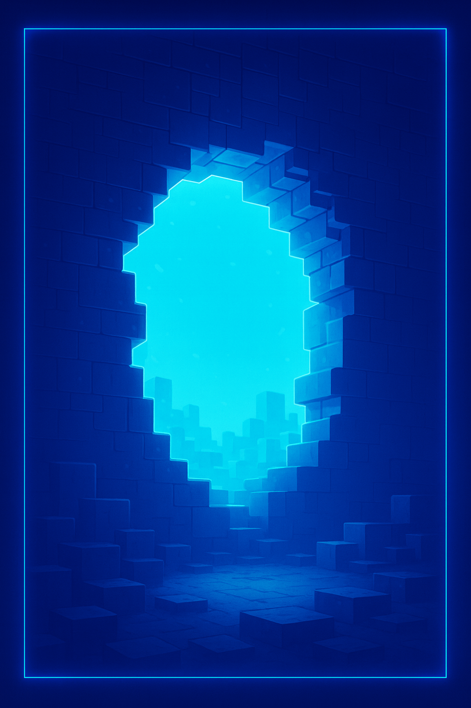

Dear Cassandra Mendoza,
Sorry this took so long.
Finals and a pile of school projects pushed this back, and then the holidays got busy with travel. But after our e-date, I really wanted to follow through and write you this letter to encourage you.
Galatians 6:9
“Let us not become weary in doing good, for at the proper time we will reap a harvest if we do not give up.”
One of the most memorable things you shared with me was that your parents and family don’t really approve of your faith. I can’t even count how many times I’ve seen sisters make it all the way through the studies, sometimes even get baptized, and then fall away almost immediately because of family pressure. Because of that, I genuinely think it’s awesome that you had strong enough faith to keep going anyway. That takes courage, conviction, and real trust in God.
I also want to remind you that when you watch your life and your doctrine closely, God can use that faithfulness to make a powerful impact on the people around you—including your family, even if it doesn’t feel like it right now.
One last encouragement: during difficult seasons, it’s incredibly important to have people you can lean on. I’d really urge you to go after building close friendships in the Kingdom—relationships where you can be honest, supported, and strengthened. The good news is that you’re a very friendly person, so this is something you’ll do well in naturally.
I hope this encourages you. Don’t give up—God sees your faithfulness.
— Tola